Media Coverage, Outreach, and Awards - Jann Zosso
A direct connection between Denmark and Switzerland: the NBI Colliderscope visualizes in real-time the particle collisions of the world's largest physics experiment at the Large Hadron Collider at CERN near Geneva.
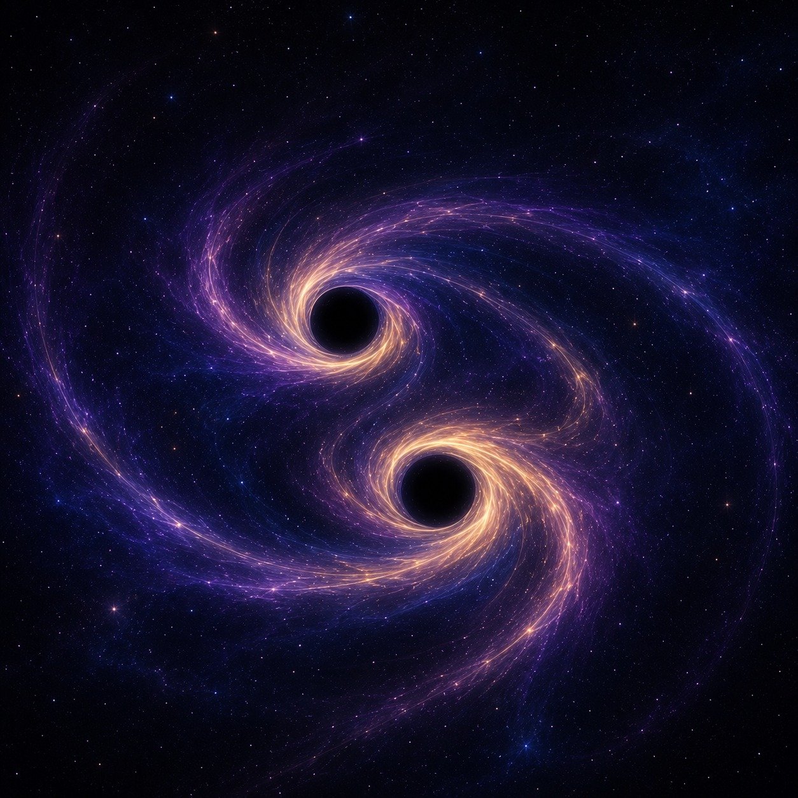
Simons Strong Gravity Long-Term Visit Award
25.06.2026
I am very grateful to the Simons Collaboration on Black Holes and Strong Gravity for awarding me support through its Long-Term Visit Program. This award will support my continued collaboration with Prof. Nicolás Yunes at the University of Illinois at Urbana-Champaign and Prof. Emanuele Berti at Johns Hopkins University, focusing on modeling gravitational memory within the strong-field sector. These collaborations have been very valuable to me and I'm looking forward to continuing them.
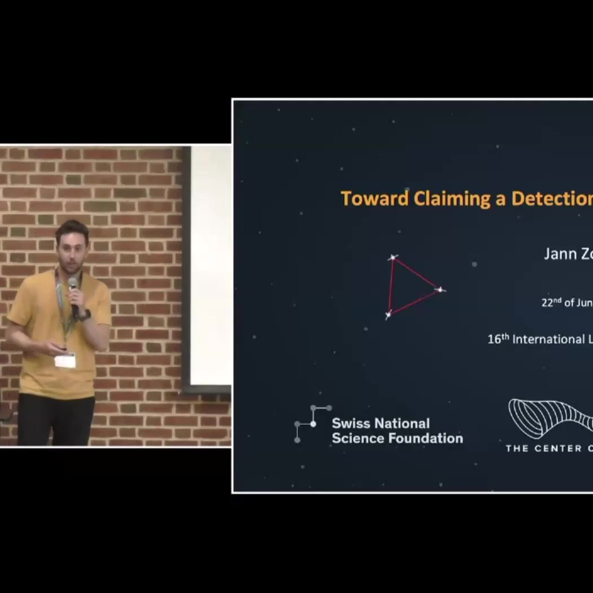
16th International LISA Symposium
22.06.2026
I was happy to present my talk ``Toward claiming a detection of gravitational memory'' at the 16th International LISA Symposium at the University of Maryland. The symposium brought together the international community working on the Laser Interferometer Space Antenna and the gravitational-wave science it will enable. In my talk, I discussed how LISA could offer a unique opportunity for the first empirical detection of gravitational memory: a permanent deformation of spacetime left behind after gravitational radiation has passed. This would provide a new observational handle on the fundamental structure of gravity.
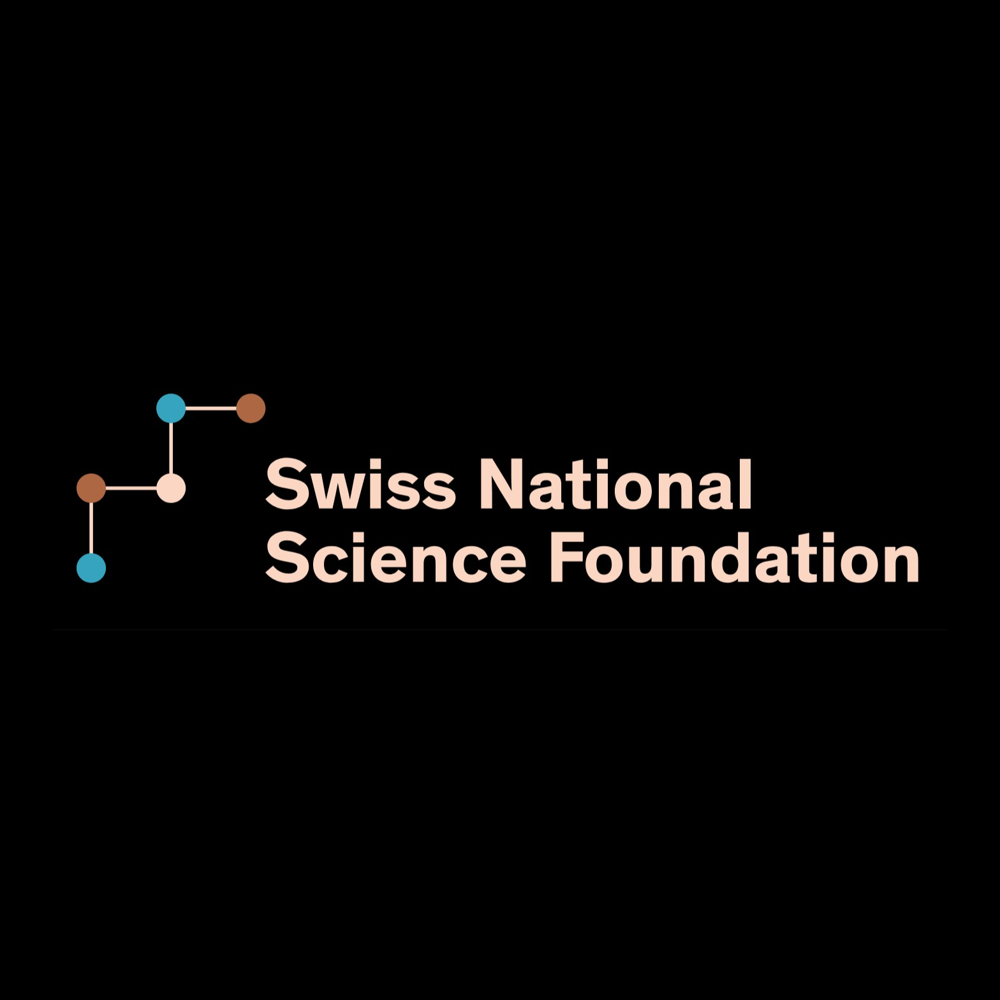
SNF Return Grant: Explore the Memory of Field Theory
17.06.2026
I am very grateful to the Swiss National Science Foundation for awarding me a Postdoc.Mobility return grant to continue my project on exploring the memory of gravity, the fundamental properties of spacetime and the low energy structure of field theory. During the return phase, I will work with Prof. Philippe Jetzer at the University of Zurich, an international expert in gravitation and astrophysics and a long-standing contributor to LISA and LISA Pathfinder. I am excited for this opportunity to bring together fundamental aspects of field theory, gravitational-wave physics, and the future science of space-based detectors.
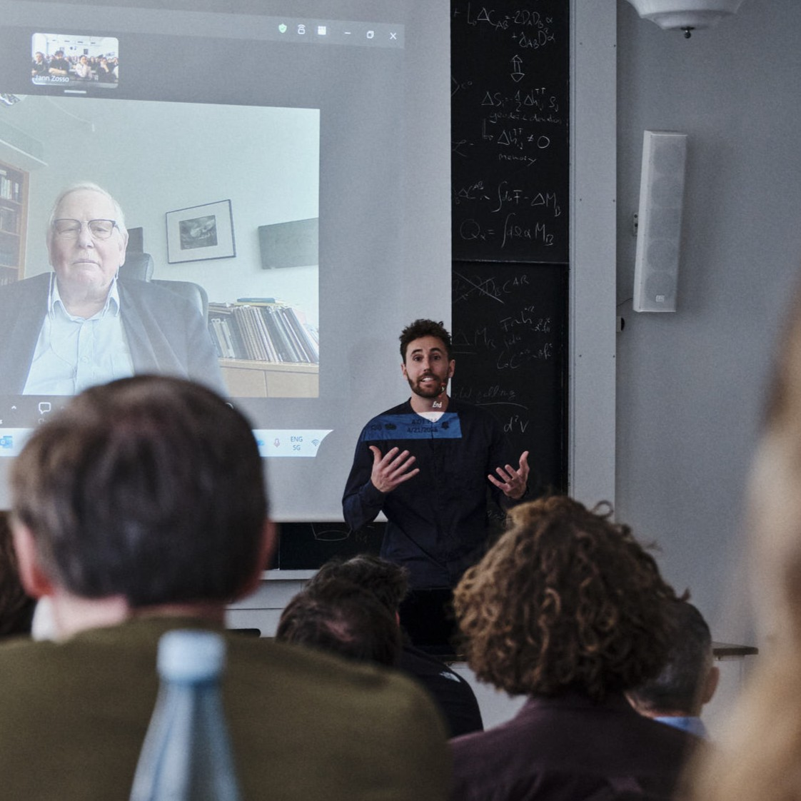
Exploring Black Holes with Nobel Laureate Reinhard Genzel
22.04.2026
The Center of Gravity Colloquia series at NBI continued with a talk by Prof. Reinhard Genzel on “Experimental Evidence for the Existence of Black Holes and their Cosmic Evolution.” The historic Auditorium A was filled to capacity, despite unforeseen circumstances that meant Prof. Genzel had to join remotely. In a sense, this format was quite fitting: astrophysics has a long tradition of learning a great deal from objects that are very far away and impossible to approach directly. Organizing a Colloquium in this setting came with its challenges, and I spent most of the talk hoping the technology would behave. But the engaged audience and lively discussions more than made up for the extra effort.
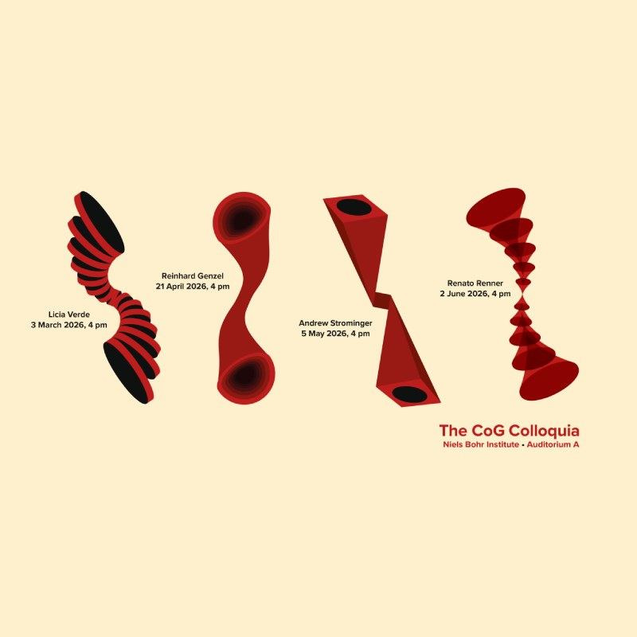
Center of Gravity Colloquia
03.02.2026
I am very grateful to Center Director Prof. Vitor Cardoso for trusting me with the organization of the very first Center of Gravity Colloquia at the Niels Bohr Institute. This new series marks the beginning of an exciting program, dedicated to hosting the future of gravity research and sharing the fascination and wonder of fundamental physics with a broad and diverse audience at NBI. The first colloquium presentation will be held by Prof. Licia Verde on the 3rd of March on the growing mystery at the heart of modern cosmology, followed by Nobel Laureate Prof. Reinhard Genzel, Prof. Andrew Strominger, and Prof. Renato Renner.
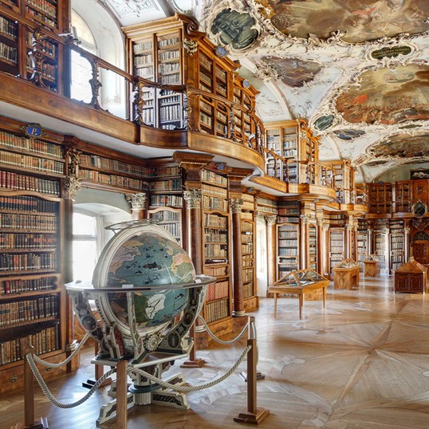
Janggen-Pöhn Scholarship
19.11.2025
I'm happy to announce that my SNF research project Explore the Memory of Gravity was further awarded a Janggen-Pöhn Scholarship. The Janggen-Pöhn-Foundation supports exceptionally talented young Swiss graduates pursuing advanced scientific training. Established in 1934, the foundation is dedicated exclusively to candidates who demonstrate outstanding ability, strong character, and the potential to make meaningful contributions to society and Switzerland. As such, the foundation's mission is to promote true excellence.
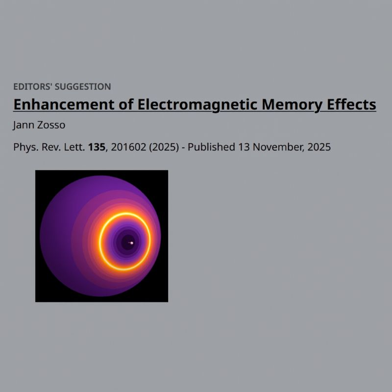
Can Light Remember?
13.11.2025
My research article was published today as Editor's Suggestion in Physical Review Letters. It uncoveres a new mechanism to enhance the memory of light - a potential breakthrough for the first scientific discovery of this phenomenon to open a new observational window onto the universal symmetries of modern physics. You can find more information in this news coverage and the full publication.
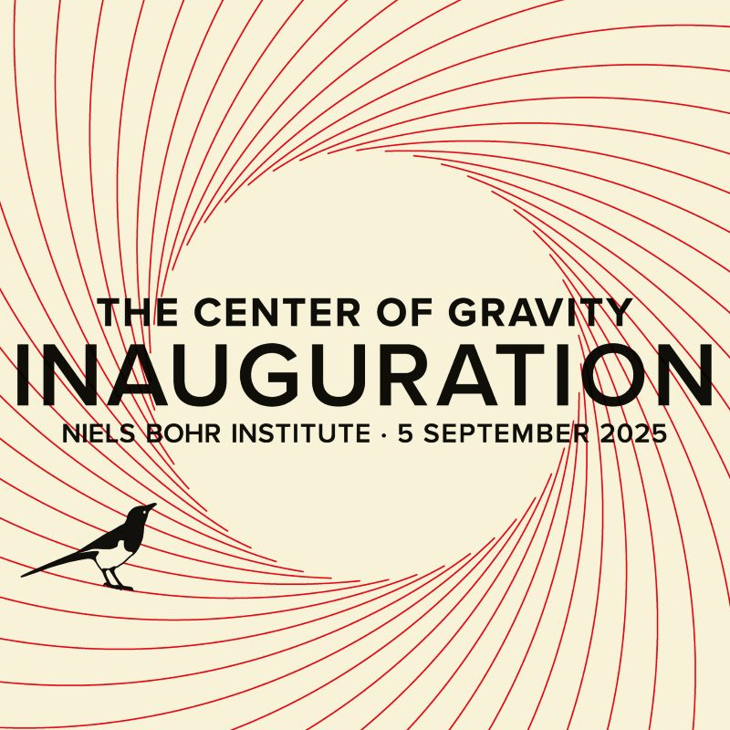
Center of Gravity Inauguration
05.09.2025
The Center of Gravity (CoG) is a new Center of Excellence led by Professor Vitor Cardoso at the Niels Bohr Institute in Copenhagen. CoG is dedicated to build upon the visions of Einstein and Bohr to uncover the fundamental physics of classical and quantum gravity at its extremes, in particular by harnessing the immense potential of gravitational wave science. Such a big investment into the curiosity of humanity by the Danish National Research Foundation is nowadays far from self-evident. I am very excited to be part of this vibrant and thriving collective at the forefront of Europe's fundamental research.
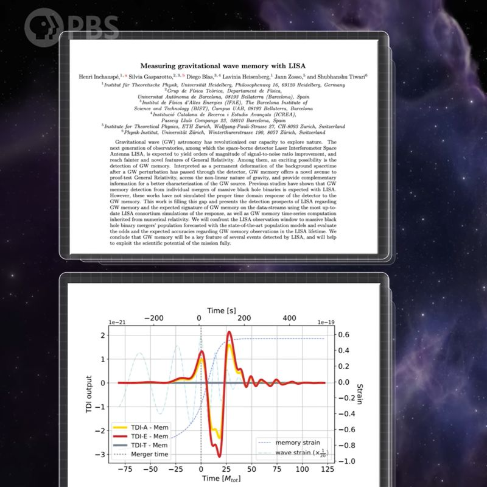
PBS Space Time: Can Space Time Remember?
14.11.2024
Our publication on the detectability of gravitational memory with the future space-based detector LISA inspired PBS Space Time to release a comprehensive outreach video on the topic with currently 370k+ views! Only problem: Our main plot in the first release of the paper has wrong features in it. A mistake which the internet will now remember forever... If you want to learn more about how spacetime can remember, check out the video here.
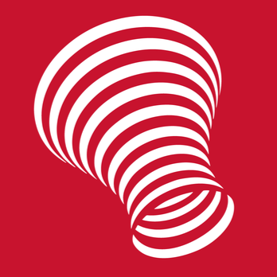
Jann Zosso joins Strong
07.01.2024
Jann Zosso is awarded a Swiss National Science Foundation Fellowship to join the Strong Group of Prof. Vitor Cardoso at the Niels Bohr Institute in Copenhagen and advance the field of gravitational physics. Building up on recent work that initiated a new approach of computing and understanding gravitational memory, he will lead the project "explore the memory of gravity" to prepare for a full exploitation of future gravitational wave data streams and provide a new handle to probe our understanding of spacetime. Explore the full news item here .
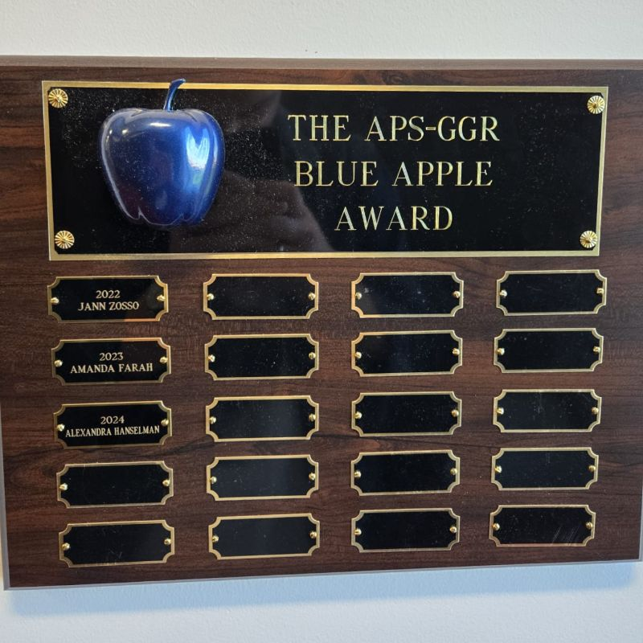
2022 Blue Apple Award
10.10.2022
Jann Zosso is awarded the Blue Apple Prize at the 2022 Midwest Relativity Meeting held at the Oakland University in Rochester, Michigan, USA, for his outstanding presentation on Cosmological tensions guiding the path beyond ΛCDM.
explore